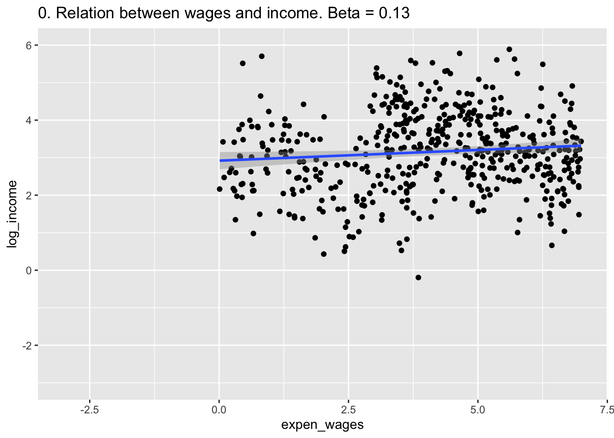
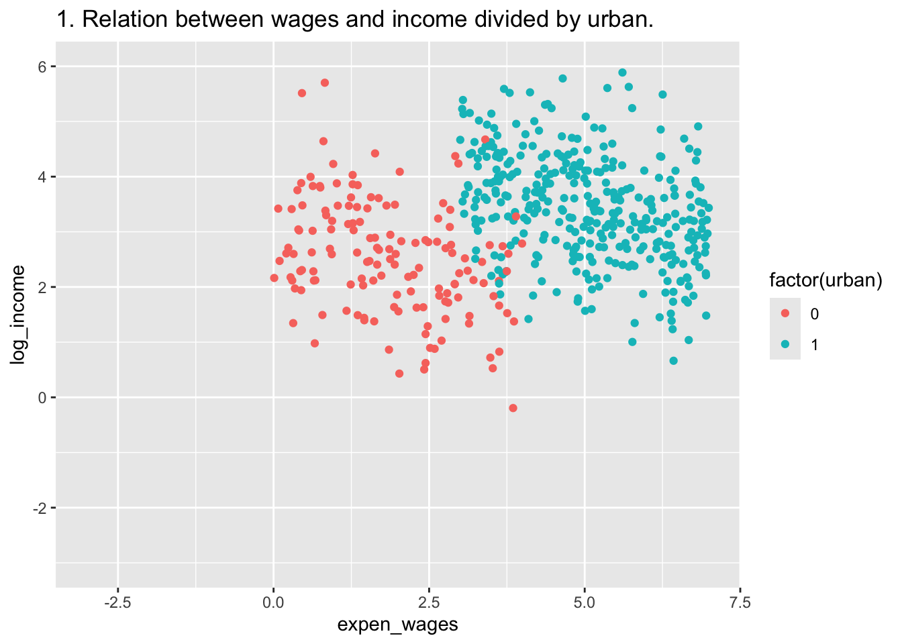
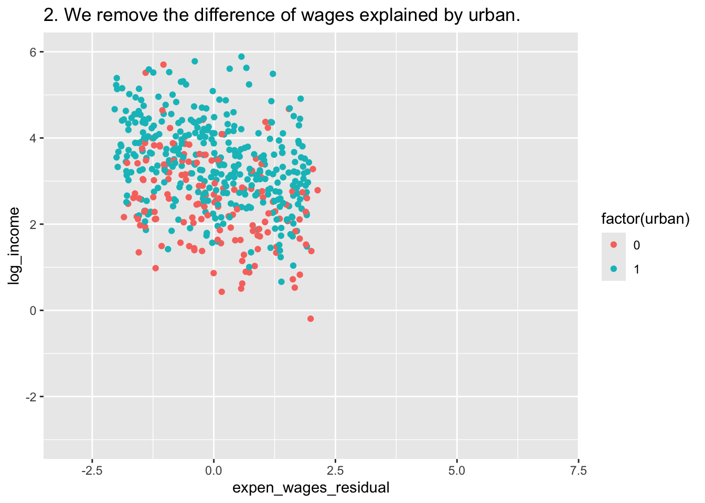
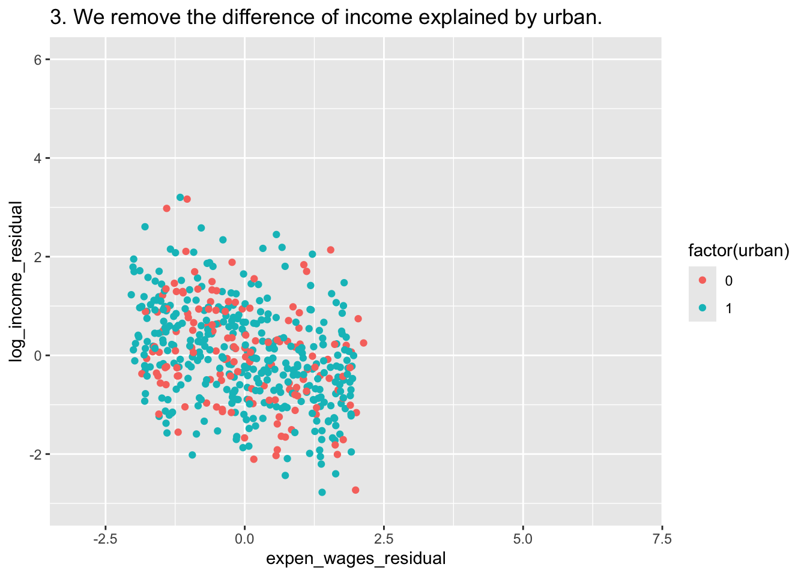
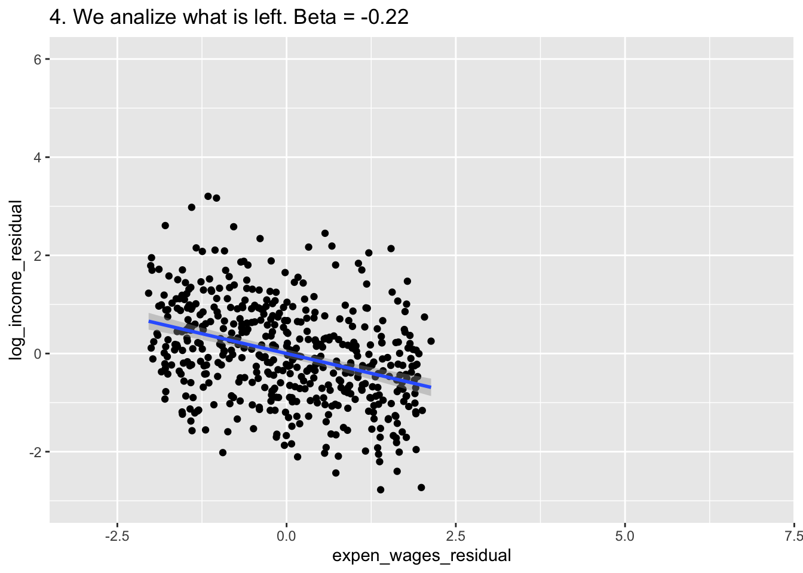
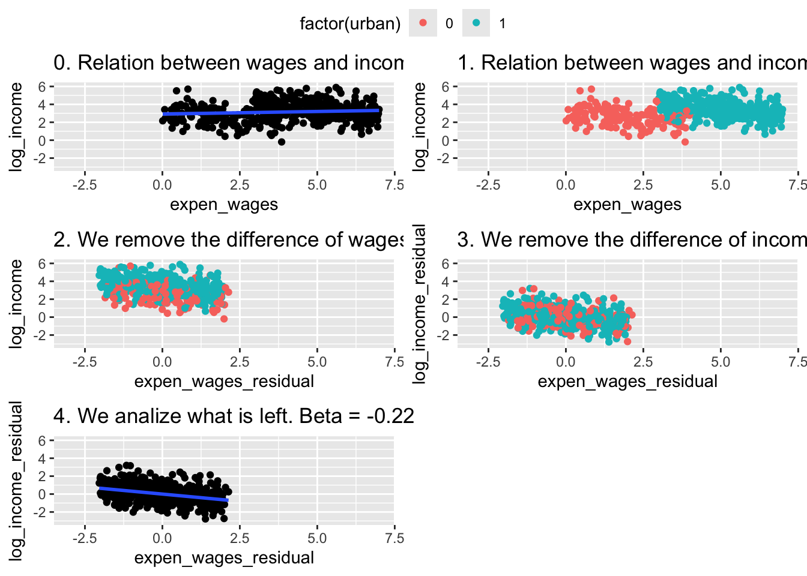

15 Lecture 6: The Multiple Regression Model I
Slides
- 7 The Multiple Regression Model (link)
15.1 Introduction
##
## Attaching package: 'ggpubr'## The following objects are masked from 'package:tidylog':
##
## group_by, mutateWe continue studying the simple regression model.
Figure 15.1: Slides for 7 The Multiple Regression Model.
15.2 Vignette 6.1
Once again, let’s simulate some data. Maybe we are interested in urban and rural towns (70% are urban) :
df <- tibble(urban = sample(c(0,1),500,replace=T,prob=c(.3,.7))) %>%
## Urban towns spend, on average, $3 million more on wages than rural towns
mutate(expen_wages = 3*urban+runif(500,min=0,max=4)) %>%
## Urban towns are also have greater incomes (e.g., from taxes), but these are reduced by their high wage expenditures:
mutate(log_income = 1 + 2*urban - .3*expen_wages + rnorm(500,mean=2)) ## <- Population Eq.Now we can estimate the effect of wage expenditure on income:
##
## Call:
## lm(formula = log_income ~ expen_wages, data = df)
##
## Residuals:
## Min 1Q Median 3Q Max
## -3.3529 -0.7474 -0.0107 0.7696 3.4804
##
## Coefficients:
## Estimate Std. Error t value Pr(>|t|)
## (Intercept) 2.94527 0.11899 24.752 <2e-16 ***
## expen_wages 0.05542 0.02647 2.093 0.0368 *
## ---
## Signif. codes: 0 '***' 0.001 '**' 0.01 '*' 0.05 '.' 0.1 ' ' 1
##
## Residual standard error: 1.086 on 498 degrees of freedom
## Multiple R-squared: 0.008723, Adjusted R-squared: 0.006733
## F-statistic: 4.382 on 1 and 498 DF, p-value: 0.03682Wait what? (Interpret a log ~ level)
15.3 Vignette 6.2
Let’s see… How can we remove everything from wages that is explained by urban? How can we remove everything from income that is explained by urban?
## summarise: now 2 rows and 2 columns, ungrouped## # A tibble: 2 × 2
## urban income_urb
## <dbl> <dbl>
## 1 0 2.54
## 2 1 3.44## summarise: now 2 rows and 2 columns, ungrouped## # A tibble: 2 × 2
## urban expen_wages_urb
## <dbl> <dbl>
## 1 0 1.86
## 2 1 5.04The difference between what is explained by urban of income/expendinture (mean) and the observed value of income/expenditure is…
df <- df %>% group_by(urban) %>%
mutate(log_income_residual = log_income - mean(log_income),
expen_wages_residual = expen_wages - mean(expen_wages)) %>%
ungroup()## ungroup: no grouping variables remainThe residual… what is not explained by urban!!
##
## Call:
## lm(formula = log_income_residual ~ expen_wages_residual, data = df)
##
## Residuals:
## Min 1Q Median 3Q Max
## -2.32648 -0.63083 -0.00077 0.58448 2.83280
##
## Coefficients:
## Estimate Std. Error t value Pr(>|t|)
## (Intercept) 2.371e-16 4.213e-02 0.000 1
## expen_wages_residual -3.228e-01 3.742e-02 -8.627 <2e-16 ***
## ---
## Signif. codes: 0 '***' 0.001 '**' 0.01 '*' 0.05 '.' 0.1 ' ' 1
##
## Residual standard error: 0.942 on 498 degrees of freedom
## Multiple R-squared: 0.13, Adjusted R-squared: 0.1283
## F-statistic: 74.42 on 1 and 498 DF, p-value: < 2.2e-16Let’s plot:
A <- ggplot(df, aes(x=expen_wages,y=log_income)) +
geom_point() +
labs(title = "0. Relation between wages and income. Beta = 0.13") +
geom_smooth(method = "lm") +
xlim(c(-3,7)) + ylim(c(-3,6))
A## `geom_smooth()` using formula = 'y ~ x'
B <- ggplot(df, aes(x=expen_wages,y=log_income,color = factor(urban))) +
geom_point() +
labs(title = "1. Relation between wages and income divided by urban.") +
xlim(c(-3,7)) + ylim(c(-3,6))
B
C <- ggplot(df, aes(x=expen_wages_residual,y=log_income,color = factor(urban))) +
geom_point() +
labs(title = "2. We remove the difference of wages explained by urban.")+
xlim(c(-3,7)) + ylim(c(-3,6))
C
D <- ggplot(df, aes(x=expen_wages_residual,y=log_income_residual,color = factor(urban))) +
geom_point() +
labs(title = "3. We remove the difference of income explained by urban.")+
xlim(c(-3,7)) + ylim(c(-3,6))
D
E <- ggplot(df, aes(expen_wages_residual,y=log_income_residual)) +
geom_point() +
labs(title = "4. We analize what is left. Beta = -0.22") +
geom_smooth(method = "lm")+
xlim(c(-3,7)) + ylim(c(-3,6))
E## `geom_smooth()` using formula = 'y ~ x'
ggarrange(A,B,C,D,E,
common.legend = T,
ncol = 2,
nrow = 3)## `geom_smooth()` using formula = 'y ~ x'
## `geom_smooth()` using formula = 'y ~ x'
## `geom_smooth()` using formula = 'y ~ x'